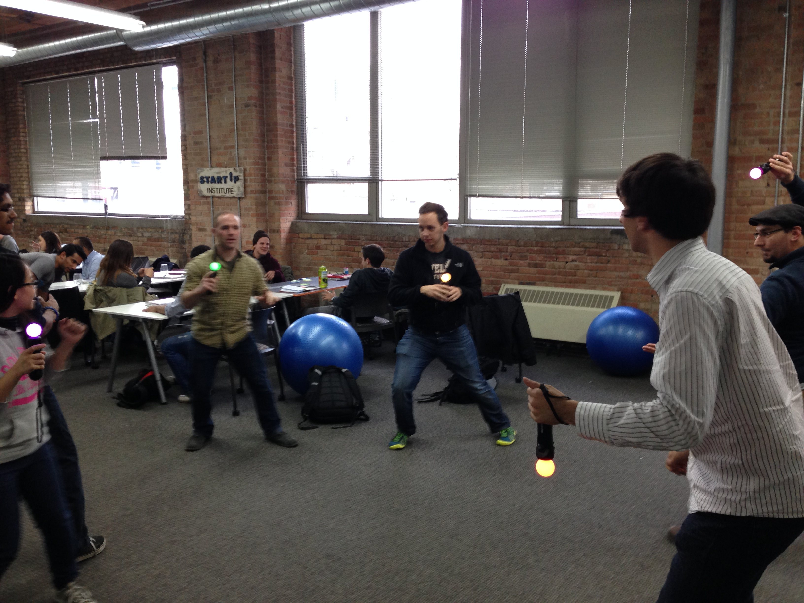
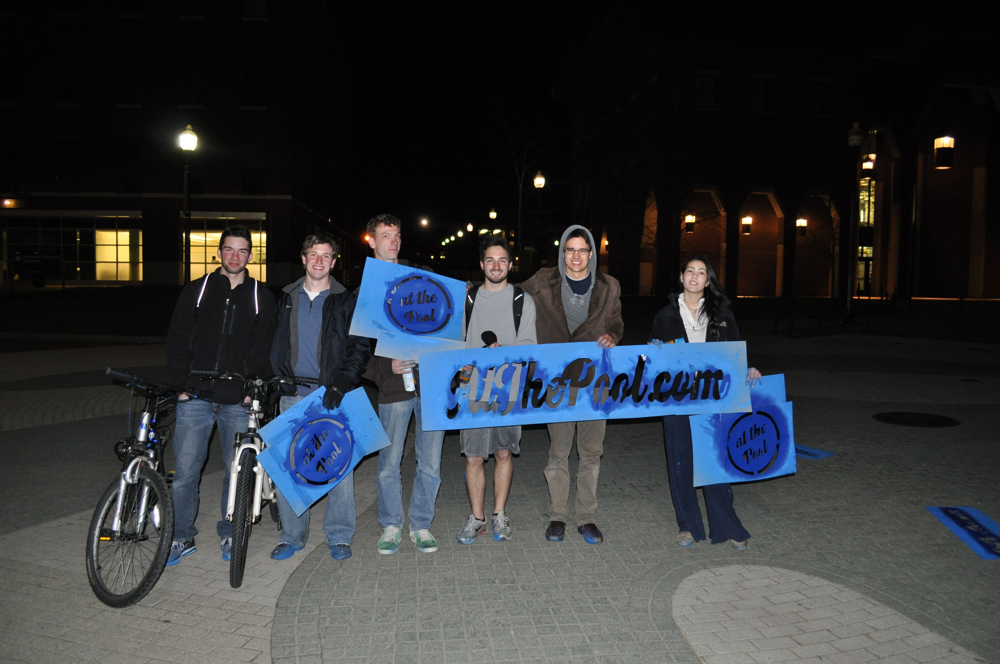

I'm studying product and design at the Startup Institute in Chicago. The program at large focuses on startup culture, team dynamics, and cross-disciplinary learning—giving me the hard and soft skills needed to be a valuable employee at an early-stage tech company.
The product and design track focuses heavily on UX, emphasizing an almost anthropological, research and data-driven approach to design. Additionally it is an eight-week crash course on front-end development, focusing on HTML 5, CSS 3, JavaScript and jQuery.
I'm surrounded by 32 of the most passionate, driven students I've ever met. Our wonderful staff at SI has created an environment based on continous learning, giving us access to brilliant mentors and instructors from the Chicago startup community.
During my stay here I've also had the incredible opportunity of working with the inspirational team over at The Noun Project.
In December, 2012 some friends and I founded an organization to host the first ever TEDx event at the University of Connecticut. The event focused on trends of the next ten years in technology, global politics, and culture. We brought in incredible speakers from all over—ranging from an IBM VP to a government startup CEO, a body image researcher at Northwestern to the head of strategy at D&A.
As VP of Design, I was in charge of translating the theme of the event into an aesthetic direction for the website, the set, and all print materials.

We started TEDxUConn with the hope of building a community on campus devoted to creating and executing new ideas, and I think the team that has formed around this idea is indicative of success in that attempt.
I joined the At The Pool team back in 2011 to help launch the first version of the site, which at the time was called Hyphos. I was part of the launch team at UConn, in which we proposed design suggestions and ran a few guerilla marketing campaigns on campus.
The site has since become At The Pool, and has grown considerably. For the full story, I'd recommend this blog post by CEO Alex Capecelatro.
This experience was my first taste of the startup world, and frankly I've been hooked ever since. I learned a lot about marketing and product development at a young company, and got to work with incredibly talented teams in CT and LA.
__✎ tom benneche